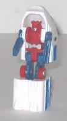
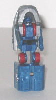

Difficulty of Transformation : Very Easy
Color Scheme : Dark gunmetal gray and some red, black, metallic teal, dark blue, silver, dull orange, and dark brownish gray
Individual Rating : 4.8
Components include
: Midnight Express,
Overload, Railspike, Rapid Run, Swindle, and Tankor (sold separately)
Individual prices
: $4 (U.S.)
Allegiances
: Autobot
Size
: Micromasters (i.e., slightly
smaller than Minicons)
Overall Rating
: 5.1
(NOTE: These toys aren't really new molds
but basically re-named, re-packaged reissues of a formerly Japanese-exclusive
Micromaster set-- Sixtrain-- from the early 1990's. Even though these toys
are sold individually, I'm reviewing them on one page for simplicity's
sake.)
 Midnight
Express
Midnight
Express
Difficulty of Transformation
: Very
Easy
Color Scheme
: Dark gunmetal gray
and some red, black, metallic teal, dark blue, silver, dull orange, and
dark brownish gray
Individual Rating
: 4.8
The new version of Midnight
Express is much smaller than his
RiD version
,
certainly, and beyond the name homages of him and his fellow Railbots
Rapid
Run
and
Railspike
, and the
Railracer
-named
gestalt form, this toy differs in every way from RiD Railracer. In train
mode, Midnight has an appropriately dark color scheme, and though a bit
plain, it's certainly realistic. The mold and paint detailing is good,
though not really more than what's required to give the toy a reasonably
realistic appearance. The teal borders on the windows add some nice contrast,
though.
In robot mode, Midnight
Express has the front two-thirds of the train mode on his back, including
the front third hanging above his head. It doesn't look so hot, though
I suppose you can't expect all that much from a 10+ year-old Micromaster
mold. Still, some way of folding back that top part so it doesn't just
jut out from behind his head would've helped. The lower legs are ridiculously
large and bulky when compared to Midnight's tiny upper legs, as the lower
parts are made of the back third of the train mode, folded around. The
front of the lower legs also jut out considerably ahead from the body and
upper legs, which looks rather odd. The arms look fairly good, though they
don't have any discernable elbows (not that any Micromasters do, really).
The body and head sculpt is also pretty good for such a small toy, and
also has a unique appearance. The orange paint used on the main body also
offers a nice contrast form the gray, as well. Like pretty much every other
Micromaster, Midnight Express has front-and-back articulation at the shoulders,
hips, and knees, and the legs are molded together, so the two hip and two
knee joints can only move as one. Not all that spectacular articulation,
mind you, but it's certainly better than nothing.
Comes with Railracer's
right foot piece.
Midnight Express is
a little below-average as far as the Railbots go, due to an even larger
portion of his train mode hanging behind his head in robot mode than on
the other Railbots. He's not really all that individual in transformation
or looks when compared to the others as well, though his head sculpt and
color scheme are fairly good.
 Overload
Overload
Difficulty of Transformation
: Very
Easy
Color Scheme
: Dull brownish bronze
and some dark blue, silver, black, and dull orangish yellow
Individual Rating
: 5.2
Overload is the only
one of two of the six Railbots whose alternate mode is not a bullet train,
the geezer. In his alternate mode, Overload looks pretty good, with no
robot extras and a very detailed mode when compared to the bullet train
modes of his fellow Railbots. The silver and black paint detailing, though
they don't really contrast with the dominant brownish bronze color much,
they still are realistic details and fit in with the scheme well.
In robot mode, Overload
looks similar to Midnight Express, but the things that really Midnight
Express' robot mode look odd proportionally are lessened in Overload, though
not negated. For one, the train mode doesn't stick above his head as far,
though it still does stick up around his head some. His legs also turn
in a slightly different manner during transformation, so his knees don't
stick out far in front of his body parts, and his legs actually have relatively
normal proportions. The yellow paint detailing on his chest is a nice contrast
to the brownish bronze, though his (rather forgettable in design) head
and the front of his feet could use some paint detailing as well.
Comes with Railracer's
waist piece.
Overload is one of the
more unique Railbots, not so much in transformation as in his old-style
alt mode. His legs also look considerably better in their proportions than
the other Railbots. My personal favorite of this team.
 Railspike
Railspike
Difficulty of Transformation
: Very
Easy
Color Scheme
: White, dark blue,
and some black, red, silver, dull brownish bronze, and dull orangish yellow
Individual Rating
: 5.1
Railspike, again the
team leader of the Railbots, is the only one who doesn't a chunk of his
vehicle mode surrounding his head-- already a sizable plus. The front of
his vehicle mode instead hangs on his back, which tends to stick out a
lot if you look at him from a side view but it's still preferable to the
former placement. His legs are even a bit worse than the other Railbots',
though, and this is the only reason why he doesn't surpass Overload in
his rating. Like most of the other Railbots, Railspike's lower legs look
really big compared to his tiny upper legs, and his knees stick out a lot
from said upper legs. Plus, the hinge that connects his upper leg piece
to his lower leg piece is easily visible from a front view, and kind of
ruins the whole illusion of him not having a big uni-leg because of this.
Railspike's color scheme of blue and white with some black and red accents
isn't exactly the most original, but it looks fairly good and is appropriate
for a train. As for the train mode, the back of Railspike's head and his
feet are somewhat noticeable, but not so much so that I'd think they qualify
as kibble-- it's still a pretty good alt mode, just definitely not the
best of the Railbots. He has the same articulation as all the other Railbots.
Comes with Railracer's
chest piece.
Railspike is the only
Railbot with an actual separate head piece, which is a big point in his
favor, but his sub-par legs and couple of minor extras in vehicle mode
keep him from being the best of the Railbots.
 Rapid
Run
Rapid
Run

Difficulty of Transformation
: Very
Easy
Color Scheme
: White, dark blue,
and some black, red, silver, and gunmetal gray
Individual Rating
: 4.9
The third RiD Railbot
name, Rapid Run, also gets reused on these Micromaster Railbots. And it
was a good name to give the mold, seeing as how the sunglass-style optics
tend to give this toy the same "cool dude" appearance that RiD Rapid Run
had in the 'toon. Other than that, though, there's nothing that really
seperates Rapid Run from just being another Railbot. He has the same "swing
down my legs, swing out my arms" transformation that three of the other
five Railbots have, and he has a nearly identical color scheme to his pal
Railspike's. He has the same "vehicle mode around the head" problem that
5/6ths of the Railbots have, though his vehicle mode looks pretty good,
if a bit more chibi-fied than the others'. He also has his rear wheels
rather visible on the sides of his upper legs, which certainly don't look
very good. Rapid Run has the same articulation as the other Railbots, and
the same general proportions.
Comes with both of Railracer's
fist pieces.
Rapid Run is pretty
much one of the "need to have if you want to form Railracer" 'bots, but
he's pretty much your run-of-the-mill Micromaster otherwise (i.e., really
doesn't measure up to today's toys, though since he's a teeny tiny TF,
he has some kind of odd draw to him).
 Swindle
Swindle
Difficulty of Transformation
: Very
Easy
Color Scheme
: Dark glittery green,
dark blue, and some black, red, white, metallic gold, silver, dull orangish
yellow, and gray
Individual Rating
: 4.7
I'm not sure who decided
to use the name "Swindle" for an Autobot, but they really need to think
harder about their name choices in the future. Regardless, Swindle is a
green boxy train, not a bullet train like all the others except Overload.
I'm not too fond of the color green being used for a train, though I have
seen some colored like that now and then. Still, that doesn't mean it looks
good. The blue and the other accent colors blend in fairly well with the
green, though the orange-yellow and white "headlights" on the train mode
look a bit too fake and hokey. Other than that, Swindle shares your run-of-the-mill
Railbot transformation, articulation, and proportions, complete with the
overly-large lower legs and the train parts around his head.
Comes with Railracer's
left foot piece.
Swindle is your average
Railbot, but with a below-average color scheme, which pushes him to the
status of my least favorite Railbot. Still, you obviously need him to complete
Railracer.
 Tankor
Tankor

Difficulty of Transformation
: Very
Easy
Color Scheme
: Dark blue, gunmetal
gray, and some red, black, and silver
Individual Rating
: 5.0
As bad as Swindle's name
choice is, Tankor's is incomprehensible-- I don't know WHAT the namers
were on when they named this guy. It'd make more sense if Tankor was a
tanker train, but he's not. Anyways, name aside, Tankor has a pretty good
color scheme-- the blue and gray go together pretty well, and are pretty
realistic colors for a bullet train. He's got average mold detailing for
the Micromasters, but above-average paint detailing-- I especially like
the blue lines crossing over his vehicle mode. Other than the slightly
different vehicle mode and color scheme, however, Tankor is pretty much
a carbon copy of Rapid Run in everything else, including the articulation,
proportions, transformation, the wheels on the sides of the upper legs,
and even the sunglass-like visor on his head.
Comes with Railracer's
head and gun pieces.
Tankor is average for
a Railbot, but his color scheme and paint apps are pretty good, and look
nice on him, so it pushes him to above-average among his brethren.
 Railracer
Railracer
Difficulty of Transformation
: Medium
Individual Rating
: 6.2
As with the other Universe Micromaster combiners, Railracer looks nice, but is pretty much a brick-- he can move forward-and-back at the shoulders and side-to-side at the head, but that's about it. However, as I said, he does LOOK nice, with pretty good proportions, and although his components' colors aren't outright the same like Micromaster Devastator's , they certainly don't clash. He also has a slightly different way of being put together when compared to the previous two Universe Micromaster gestalts, and it works better-- his arms and especially his legs fit together decidedly better. (It's actually a bit TOO hard to get Swindle to connect to his waist piece, in fact.) However, Railracer's extra pieces that come with the Railbots don't form some kind of vehicle when they're not being used for this form, which is a rather significant downside, as I hate pieces that you can't do anything with in a certain mode.
Just like the other Universe Micromaster sets, the Railbots are a nice little blast from the past if you like little transformers and/or the old-style gestalts, but from an objective standpoint they simply don't measure up to more modern Transformers, and KB Toys' expensive prices is another factor that limits my recommendation. So unless you fit one of the categories I just described, you're better off skipping this set.
No Stats
Review by Beastbot